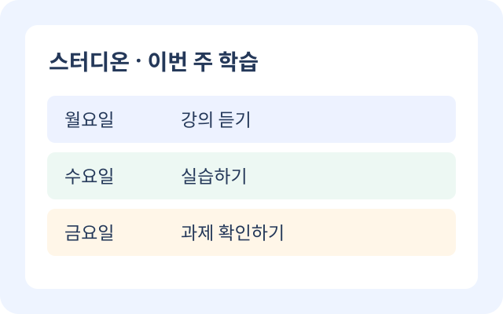

서비스 소개
스터디온은 온라인 강의와 과제 일정을 한곳에서 관리하도록 돕는 학습 계획 서비스입니다.
일과 학업을 병행하는 학생이 이번 주 할 일을 확인하고, 작은 목표부터 꾸준히 실천할 수 있도록 기획했습니다.

주요 기능
-
강의 일정 모아보기
과목별 수강 일정과 이번 주 학습할 내용을 한눈에 확인합니다.
-
과제 마감일 확인
제출 기한과 준비할 자료를 함께 정리해 과제를 미리 준비합니다.
-
학습 목표 관리
일주일 동안 실천할 목표를 세우고 학습 진행 상황을 점검합니다.
이용 방법
- 관심 과목과 이번 주 학습 목표를 정합니다.
- 강의 일정과 과제 마감일을 기준으로 학습 계획을 세웁니다.
- 계획을 실천하고 주말에 완료한 내용을 확인합니다.
학습 목표 입력
관심 과목과 목표를 적어보세요. 이 소개 페이지의 입력 내용은 저장되거나 전송되지 않습니다.